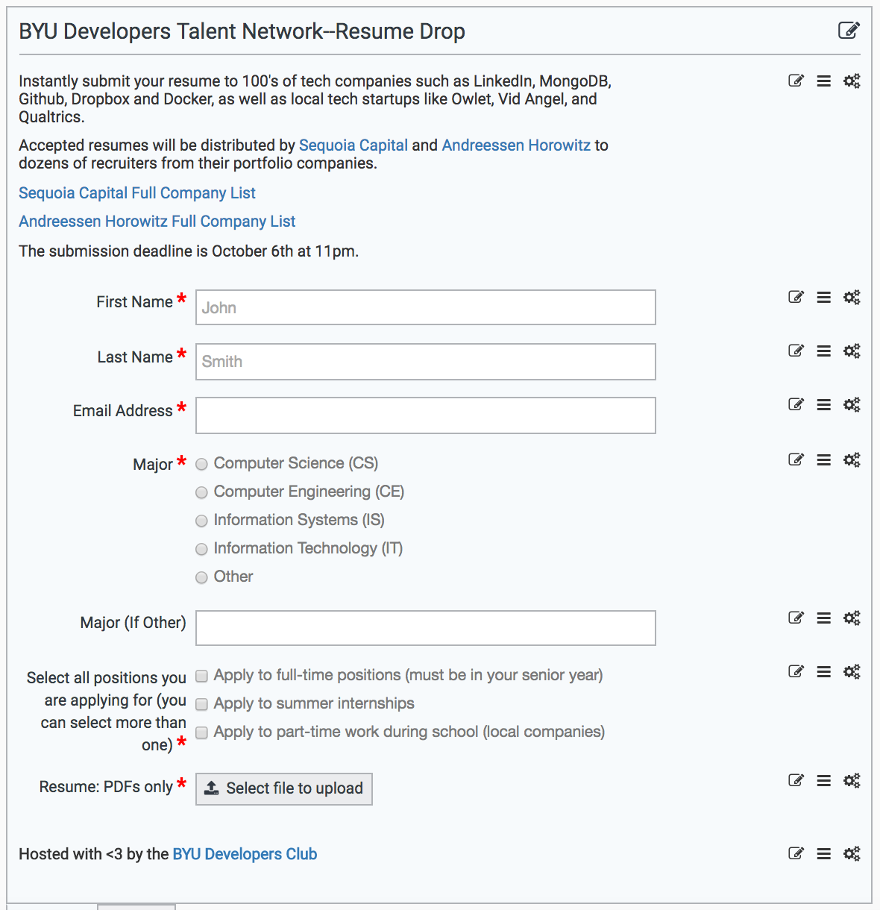

| Role |
Current Officer |
Officer Photo |
Officer Bio |
Responsibilities |
| President |
Josh Cockrell |
|
Josh is studying Computer Science and Business at BYU. He's held two internships positions at Microsoft in addition to his upcoming internships at Twitter and Adobe. He has served as President of the Dev Club since Oct 2015. Josh loves checking Hacker News 15 times a day, producing electronic music, and making fun of people who check Hacker News 15 times a day. Josh's Personal Site
|
- Recruit new officers
- Onboard new officers dev.byu.edu/new-officers
- Raise money for the club
- Push for STEM fair volunteers
- Keep clubs.byu.edu status as “Recognized”
- Complete BYUSA President training
- Keep club charter up to date
- Oversee slack channel
- Help other officers in their roles
|
| Vice President |
Buster Townsend |
|
Buster is a Master’s of Information Systems student with an emphasis in development. He has had an internship doing development work in the past with Cotopaxi. His main hope and goal is being able to find ways to change the world with code. If you can’t find him busy working on a project, you check out the outdoors as he might be busy fishing.
|
- Recruit new officers
- Onboard new officers dev.byu.edu/new-officers
- Raise money for the club
- Push for STEM fair volunteers
- Keep clubs.byu.edu status as “Recognized”
- Complete BYUSA President training
- Keep club charter up to date
- Oversee slack channel
- Help other officers in their roles
|
| VP - Talent Network |
Cody Burt |
|
Cody is a senior studying Computer Science. He has interned at Epic Systems in Madison, WI and Course Hero in Redwood City, CA. He will be back working at Course Hero full-time after he graduates this April. In his free time he enjoys going to concerts, the climbing gym, and trying to keep up with all the amazing TV shows that come out.
|
- Create the Google Form (we’ve used formpl.us in the past)
- Set the deadlines
- Print/create fliers and start marketing efforts
- Write blurbs for Marketing to use
- Filter resumes
- Sort into different resume banks (Full-time, part-time, internships)
- Send resumes to contacts
- Package resumes so other officers can send to their contacts
- 
|
| VP - Talent Network |
Shane Whitlock |
|
Shane is famous for having short bios.
|
- Create the Google Form (we’ve used formpl.us in the past)
- Set the deadlines
- Print/create fliers and start marketing efforts
- Write blurbs for Marketing to use
- Filter resumes
- Sort into different resume banks (Full-time, part-time, internships)
- Send resumes to contacts
- Package resumes so other officers can send to their contacts
|
| VP - Strategy |
Tyler Peterson |
|
Tyler is a third year student studying Business and Computer Science at BYU. He's interned twice at Visa and at ClientSuccess, and will be interning at Applovin soon. In his free time he enjoys playing the guitar, camping and hiking, and skiing. Personal Website
|
Hyper-focused on putting together big events. Organizes multi-club events.
|
| VP - Design |
Jake Hasler |
|
Steve Jobs afficionado, Dad-Joke teller, and Bagel Bite Consumer. Jake discovered programming in 2014, and has been glued to his Macbook Pro ever since. He works as a full-time Software Engineer for Y-Combinator Alumni Company, Podium. Stemming from his previous three years of industry experience in Graphic design, he loves bringing pixels together to create beautiful things. His most recent side-project is coming to an app store near you very soon. Check it out here
|
- Create a new t-shirt once per year using imagewearutah.com
- Business cards
- Keep logos up to date
- Provide marketing download pack on website in useful formats with logos
|
| VP - Startup Development |
JK Jensen |
|
Jk is a Jack of many trades, delving into everything from enterprise-level IoT product design to leading front-end development at an early stage SAAS startup. He has strong opinions about hamburger menus and centering a business around an app, and most of his time is spent writing sad songs and reading books. Personal Site
|
Mentors startups and individual club membership. Validates product ideas and opportunities for club members.
|
| VP - Engineering |
McCann Dahl |
|
McCann is an Android developer that enjoys dirt biking, skiing, and soccer. He is most famous for his short bios.
|
Keeps everyone informed about club events. Facilitaties slack activity. Organizes club projects and workshops. Sets up fliers in the wilk. Helps train club members.
|
| VP - Finance |
Andrew Sanford |
|
Andrew is a Master's of IS student, emphasizing in cybersecurity and PhD prep. He's passionate about cybersecurity and educating people on how to make their code not die. He enjoys coding/building things in his free time. His research focuses on accounting fraud/fraud analytics. Andrew also enjoy reading, cooking, short hikes, making music, and laughing with people about their poor security practices. Andrew's Personal Site
|
- Plan budget with presidency once per year
- Approve expense requests from officers
- Unique requests should be approved by presidency
- Get email approval from Christophe for any purchases
- Check out the CS card
- Make purchases
- Return the CS card day of ordering
- Order weekly pizza
|
| VP - BYU Affairs |
Eric Clinger |
|
Eric is an IS major, pro DJ, and works for BYU AV.
|
Coordinates class visits. Works with colleges and departments at BYU to advertise club events in newsletters, digital sinage, etc. Manages club relations on campus. Works with the VP of Marketing heavily.
|
| VP - Marketing |
Geoff Gorham |
|
Geoff is a second-year Computer Science and Business student with a deep love of Peruvian food. He hails from the bustling metropolis of Shepherd, Montana where he gained an appreciation for camping, hiking, country music, and shooting things.
|
Manages our 300+ person mailing list. Markets BYU Dev throughout campus.
|
| Maker Space Coordinator |
Ben Thompson |
|
Ben is graduating in April with a degree in Computer Science. He has interned at Fireye two years in a row. Currently, he works for Qualtrics as a Software Engineer and is moving to their Seattle office in June. Ben has been married for 3 years to his amazing wife, Samantha. They have two dogs. He has been in club leadership since October 2015. benthompson.me
|
Manage equipment and order needed parts.
|